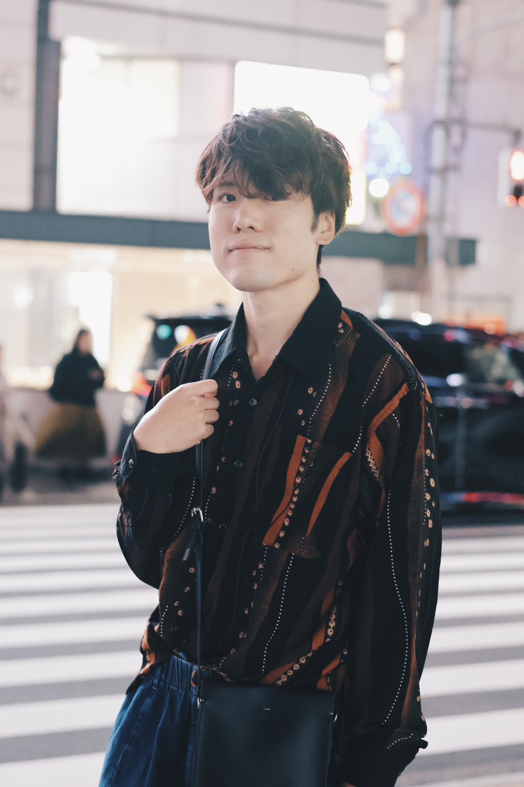

武田 和将 TAKEDA KAZUMASA
声と笑顔で、あなたの毎日にちょっとした温もりと楽しさをお届けします！
ラジオ生放送パーソナリティ、ポッドキャスト配信をはじめ、モデル、俳優、各種イベントMCとして幅広く活動中。
プロフィール
愛知県名古屋市出身。ラジオパーソナリティを中心に、俳優、アパレルモデル、イベント司会（MC）としてマルチに活動中。
元テーマパークマンで教員免許を所持。体験学習にも携わる中で、楽しい空間を生み出すことを日々追求中。好奇心からワーホリでニュージーランド滞在も経験。親しみやすく柔らかいトークと明るいキャラクターで、どんな空間も温かく盛り上げます。
好きなこと・趣味
基本情報
出演中のメディア・番組
ラジオ生放送・レギュラー・ポッドキャスト配信中！
〈KAWAGOE LIVE〉LOVE LIKE BOX
生放送でお届けする夕方の情報・トーク番組！好きを詰め込んだコーナー盛りだくさんのわちゃわちゃプログラム。
That's awesome!
週末の夜にゆったり楽しんでいただける30分間のプログラム。あなたの日常に寄り添います。
紀伊國屋書店川越店presents 本に出会う15分
紀伊國屋書店川越店のオススメの本や物語の魅力を月替わりテーマでナビゲートする15分番組。
ただくだらない
ユーヘーさんと共にお送りする、肩の力を抜いてクスッと笑える気負わないカジュアルポッドキャスト番組！
ALOHA 🌺
Ayanaさんと一緒にお送りする明るくハッピーで温かいYouTube Podcast番組。
過去の主な実績一覧
ジャンル別に絞り込んでご覧いただけます
SNS ＆ お問い合わせ
最新情報や日常の投稿は各SNSにて発信中！
ぜひチェック＆フォローをお願いします。
お仕事のご依頼・お問い合わせ
ラジオ出演、イベント司会（MC）、映画・モデル撮影などのご依頼・ご相談はメールでお気軽に！